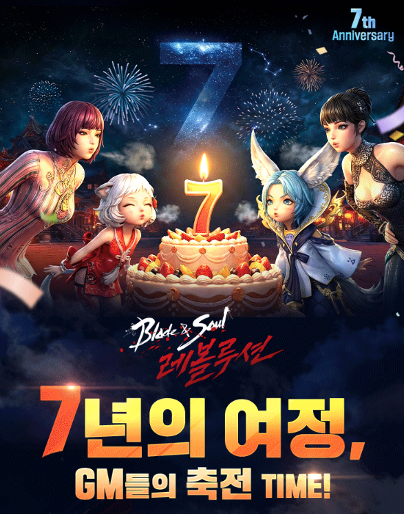
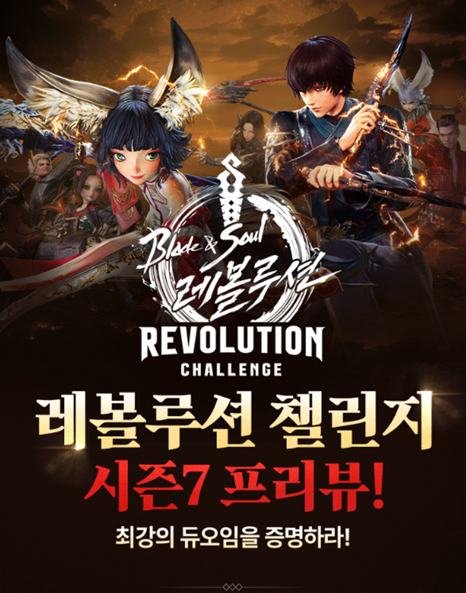

Career Summary
기획과 운영을 아우르는 올라운더
유니티 게임을 기획해 출시해 본 경험부터 MMORPG 라이브 운영까지 맡아 왔습니다.
기획과 운영, 데이터와 콘텐츠를 함께 다루며 실무 범위를 넓혀 가고 있습니다.
경력과 학력
총 1년 10개월
아이지에스 (IGS)
2024.12 ~ 현재 · 넷마블 계열사
2020.03 ~ 2024.02
유한대학교
스마트콘텐츠학과 모바일앱전공
현업에서 라이브 서비스를 운영하며 담당한 업무입니다.


업무 중 불편을 직접 도구로 만들어 해결하고, 사내에서 성과를 인정받은 사례입니다.
실무에서 실제로 사용한 역량과 도구입니다.
일할 때 기준으로 삼는 다섯 가지입니다.
게임 시스템 역기획부터 타 산업 적용 기획까지 46건을 정리했습니다.
🗂️ 기획·운영 아카이브 46건 게임 시스템 기획, 라이브 운영, 데이터·시장 분석, 마케팅, 타 산업 적용, 대학 창작 프로젝트연락은 이메일로 부탁드립니다.